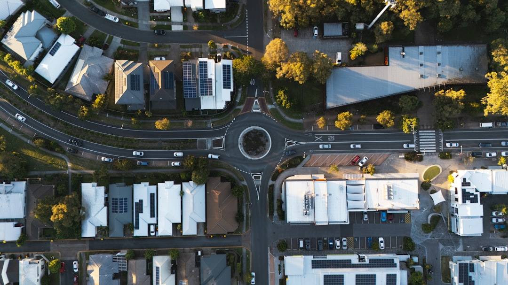

For local buyers, home loan brokers brisbane actually work for suburbs stretching from Chermside and Aspley through to Sandgate and Bridgeman Downs.
See Home Loan Broker North Brisbane for the current service details.
Home Loan Brokers Brisbane Explained
Households across North Brisbane suburbs such as Chermside, Stafford, Kedron and Wavell Heights do not deal with 30-plus lenders directly. A form submission is matched to an independent, MFAA or FBAA accredited broker on the panel, usually within one business day. That broker handles the credit advice and the application end to end, rather than passing the file between staff.
The free review runs around 30 minutes, either by phone or video call, and covers borrowing power, a lender shortlist and a realistic timeline before any application is lodged. Home Loan Broker North Brisbane outlines this four-step process, from form to settlement, on its own site. The accreditation check matters most for buyers in newer growth pockets like Carseldine and Bridgeman Downs, where lender appetite for the area can shift faster than a generic comparison site tracks.
First home buyer support
First home buyers in the North Brisbane network are walked through the Queensland First Home Owner Grant and the federal First Home Guarantee, which lets eligible buyers purchase with a 5% deposit and no lenders mortgage insurance, subject to income testing and capped annual places.
Deposit gaps are a common sticking point for buyers eyeing established pockets such as Clayfield, Albion or Wooloowin, and the broker maps them against lender policy rather than a generic calculator estimate. A related resource on first home buyer loans in North Brisbane covers the grant and guarantee criteria in more depth.
- Queensland First Home Owner Grant eligibility
- Federal First Home Guarantee deposit and income caps
- Lender selection matched to grant and guarantee rules
Refinancing and investment loan structures
Refinance reviews compare an existing rate, fees and structure against the panel at no cost, flagging whether a switch is worth pursuing before anything is signed. Investment lending is handled separately, covering interest-only terms, offset accounts, SMSF lending and multiple-property structures, matched to the panel lenders that support each strategy.
This separation matters because an owner-occupier lender is not always the right fit for a geared portfolio, and the broker's job is to avoid locking a client into a structure that limits later refinancing, whether the property sits in Nundah, Northgate or further out toward Bracken Ridge.
Borrowing power and what it costs
Most North Brisbane households qualify for $450,000 to $850,000 on standard owner-occupier terms, though the real figure depends on net income, ongoing commitments, dependants and individual lender policy. A borrowing power calculator gives a starting estimate with no email required, but a precise, lender-specific number needs live serviceability run during the review.
Using a broker costs nothing direct to the borrower. The broker is paid commission by the lender at settlement, and that commission is disclosed in writing through a Credit Quote and Credit Proposal Disclosure before any commitment is made.
Settlement timelines
Standard purchases usually take 30 to 45 days from an accepted contract to settlement. Refinances tend to move faster in application terms but settle in 4 to 8 weeks overall, largely because the timeframe depends on how quickly the outgoing lender processes the discharge.
A conveyancer, the lender and the broker are aligned toward the same settlement date, and the broker typically remains available afterwards for annual rate reviews rather than disappearing once the loan funds, useful for owners in Everton Park or Wavell Heights watching rates move.
- Submit the form. Provide income, deposit and goal details, which takes under three minutes.
- Get matched with a broker. An independent licensed broker on the panel is assigned within one business day.
- Complete the free review. A 30-minute call confirms borrowing power, lender shortlist and a realistic timeline.
- Settlement and beyond. The conveyancer, lender and broker align on settlement, with annual rate reviews after.
| Loan type | Key focus | Typical timeframe |
|---|---|---|
| First home buyer | Grant and guarantee eligibility, deposit gap | 30-45 days to settlement |
| Refinance | Rate, fee and structure comparison | 4-8 weeks depending on discharge |
| Investment | Interest-only, offset, SMSF, multi-property structuring | 30-45 days to settlement |
This guide covers how North Brisbane home loan brokers are matched, first home buyer and refinance support, investment loan structuring, borrowing power ranges and settlement timelines.